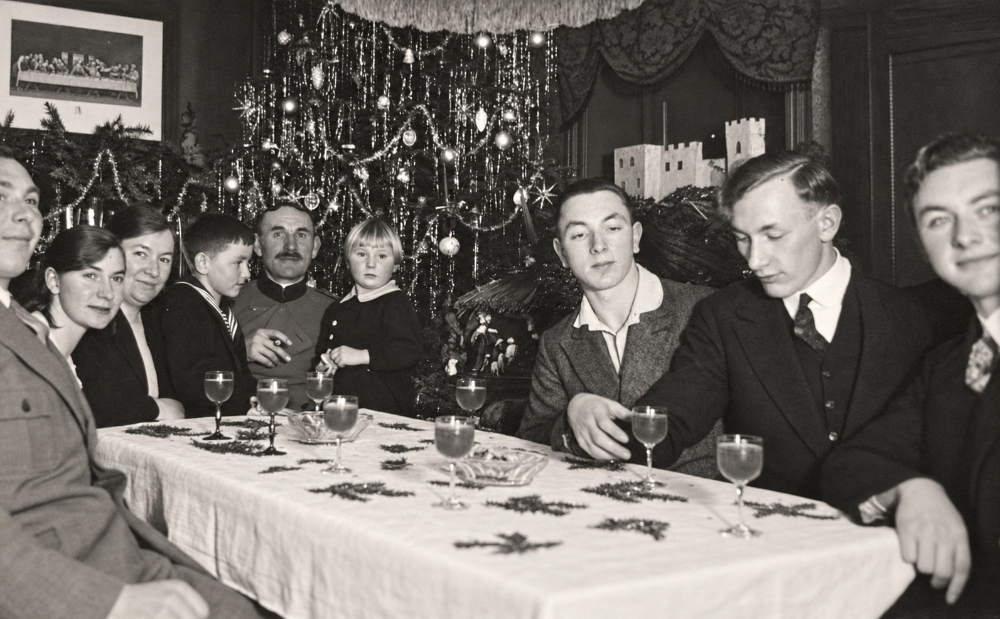
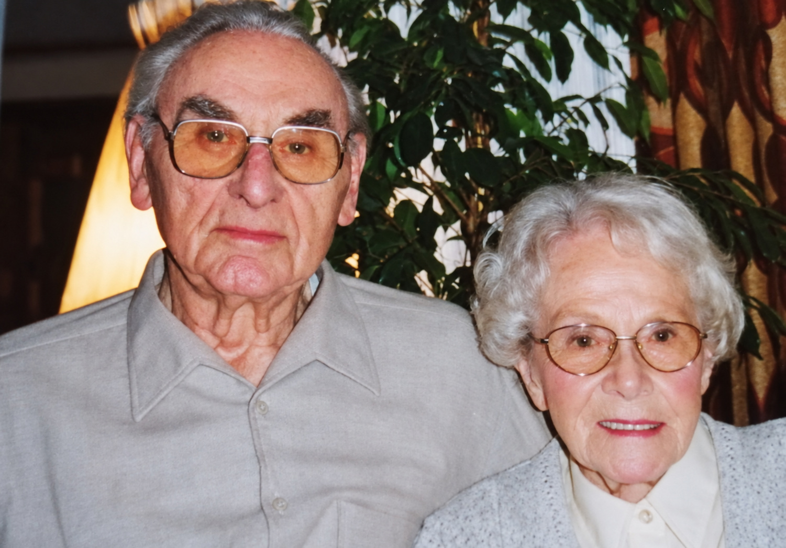

Ich selbst kenne diese Jahre nur aus den Erzählungen meiner Eltern und aus den Briefen, die sie sich schrieben. Es sind viele Briefe. Sie beginnen vor dem Krieg und reichen bis in die ersten Nachkriegsjahre. Darin geht es um Truppenverlegungen, Frontabschnitte, um ausgefallene Züge und verweigerten Urlaub. Aber auch um ein Spitzenkleid aus Trier, die ersten Zähne eines Kindes und die Frage, ob der Vater rechtzeitig von der Geburt seines ersten Sohnes erfahren würde.
Meine Eltern hießen Lenchen und Heinz. Beide stammten aus Försterfamilien. Mein Vater wurde in Neidenbach in der Eifel geboren. Er hatte eine Schwester, Sofia, und fünf Brüder: Josef, Hans, Klaus, Arthur und Rudi. Mein Vater, Arthur und Rudi waren Förster oder wollten es werden. Josef schlug einen anderen Weg ein und wurde Bildhauer. Er starb später an Lymphdrüsenkrebs. Arthur starb 1943 mit 19 Jahren im Krieg in der Nähe von Orel

Auch meine Mutter kam in einem Forsthaus zur Welt, und zwar in Winterspelt. Aufgewachsen ist sie in Jünkerath, wo ihr Vater als Förster arbeitete. Sie hatte acht Geschwister: zwei Schwestern und sechs Brüder. Die Brüder waren Förster oder auf dem Weg dorthin.
Der Krieg traf diese Familie auf eine Weise, die man sich heute kaum noch vorstellen kann. Vier der sechs Brüder meiner Mutter kehrten nicht zurück. Bei einigen wusste die Familie nicht einmal, wo sie gefallen waren. Einer von ihnen war Peter. Er kam bei einer Partisanenaktion nahe Charkiw ums Leben. Ein Bauchschuss hatte ihn getroffen, und er verblutete.
Für meine Mutter war die Möglichkeit, auch ihren Mann zu verlieren, deshalb keine entfernte Befürchtung. Sie hatte diesen Verlust in der eigenen Familie mehrfach erlebt. Auch die Familie meines Vaters hatte mit Arthur bereits einen Sohn und Bruder verloren.
Als meine Eltern sich kennenlernten, waren sie jung. Sie konnten nicht wissen, dass ihre Beziehung bald fast vollständig aus Briefen, kurzen Besuchen und immer neuen Abschieden bestehen würde. Der Krieg bestimmte, wann sie sich sehen, wann sie heiraten und wie viel Zeit sie mit ihren ersten Kindern verbringen konnten. Dass daraus trotzdem eine Familie entstand, war nicht selbstverständlich.
Der erste Tanz
Am 1. Mai 1938 tanzten Lenchen und Heinz zum ersten Mal miteinander. Meine Mutter schrieb später, sie habe damals „Feuer gefangen“. Bei meinem Vater ging es offenbar etwas langsamer. Er blieb zunächst zurückhaltend, und eine Zeit lang entwickelte sich aus der Begegnung nicht viel. Erst ein Brief, den meine Mutter ihm kurz vor dem deutschen Einmarsch in Polen schrieb, brachte die Sache wieder in Gang. Dieser Brief ist nicht erhalten. Er muss aber etwas bewirkt haben.
Mein Vater war seit dem Frühjahr 1939 Soldat bei der 5. Panzerdivision. Im September nahm er mit einer motorisierten Einheit am Feldzug gegen Polen teil. Seine Briefe berichten von langen Märschen, ständig wechselnden Orten und schließlich von der Begegnung mit sowjetischen Truppen an der vereinbarten deutsch-sowjetischen Demarkationslinie. Danach ging es zurück nach Mährisch-Schönberg und Ende November weiter nach Westen.
Als seine Einheit über Unna, Hesselbach und Sasserath schließlich in den Raum Zülpich verlegt wurde, war er der Eifel wieder näher. Damit wurden Besuche überhaupt erst möglich. Ende 1939 stand er überraschend in Jünkerath vor der Tür. Am 18. Februar 1940 trafen sich beide bei Verwandten in Mödrath. Noch blieb manches unausgesprochen. Beim nächsten Besuch am 9. und 10. März bekannte mein Vater meiner Mutter schließlich seine Liebe. Später bezeichnete er diesen Abend als ihre „kleine Verlobung“.
Danach begann das, was ihre Beziehung über Jahre bestimmen sollte. Fast jeder freie Sonntag hing von militärischen Genehmigungen, Dienstplänen und unzuverlässigen Zugverbindungen ab. Ein geplanter Osterurlaub fiel aus. Im April trafen sie sich in Euskirchen. Ende April wurde mein Vater in Kall abgeholt und konnte einige Tage in Jünkerath verbringen. Die nächste Begegnung war für Pfingsten vorgesehen. Dann begann der Krieg gegen Frankreich.
Mein Vater als Soldat
Der Weg meines Vaters führte durch die Eifel nach Belgien, über die Maas und weiter nach Frankreich. Seine Einheit kämpfte bei Cambrai, Arras, Lille und Saint-Omer, zog über die Somme bis zur Kanalküste und schließlich durch die Bretagne. Auf dem Rückweg konnte er im Juli 1940 bei Daun für kurze Zeit aus der Kolonne ausscheren und meine Mutter sehen. Im August und im Herbst folgten längere Urlaube. Am 12. Januar 1941 verlobten sich beide offiziell.
Die Briefe meines Vaters erzählen nicht nur, wo er war. Sie zeigen auch, wie er damals dachte. Vor allem in den ersten Kriegsjahren war seine Sprache deutlich von der nationalsozialistischen Propaganda geprägt. Er schrieb voller Stolz über die deutschen Feldzüge, sprach vom „Führer“ und glaubte an den Sieg. Über die militärischen Gegner äußerte er sich teilweise in entwürdigender Sprache. Selbst als der Krieg für Deutschland längst verloren schien, hoffte er noch auf eine Wendung.
Das gehört zu seiner Geschichte, und ich möchte es nicht verschweigen. Es wäre einfach, solche Stellen heute zu übergehen, weil sie nicht zu dem Vater passen, den ich später kennengelernt habe. Ebenso einfach wäre es, ihn ausschließlich aus heutiger Sicht zu beurteilen, ohne zu berücksichtigen, in welcher Zeit und in welcher Umgebung er aufgewachsen war.
Mein Vater war kein unbeteiligter Beobachter. Er war Soldat, wurde zum Offizier ausgebildet und später als Kompanieführer eingesetzt. Er glaubte zumindest über lange Zeit an das Regime, an Hitler und an den deutschen Sieg. Ich weiß nicht, wie weit dies seine eigene gefestigte Überzeugung war und wie viel davon der übernommenen Sprache seiner Umgebung entsprach. Die Briefe lassen aber keinen Zweifel daran, dass er diesen Krieg anfangs für richtig hielt.
Damit war er nicht allein. Viele junge Männer seiner Generation waren in einer Gesellschaft aufgewachsen, in der Gehorsam, Vaterland und militärische Pflichterfüllung als hohe Tugenden galten. Die nationalsozialistische Propaganda knüpfte daran an und gab diesen Vorstellungen ihre verbrecherische Richtung. Das erklärt, warum mein Vater so denken und schreiben konnte. Es macht die Aussagen nicht besser, aber es ordnet sie in ihre Zeit ein.
Im Verlauf der Briefe verändert sich der Ton. Die großen Worte werden von der Wirklichkeit überlagert. Es geht zunehmend um Müdigkeit, Verwundungen, tote Kameraden, zerstörte Städte und die Sorge um Frau und Kinder. Der Krieg, der anfangs noch als siegreicher Feldzug erscheint, wird zu einer endlosen Trennung und schließlich zu einem Kampf ums Überleben. Die Ideologie verschwindet nicht von einem Tag auf den anderen. Aber das wirkliche Leben drängt sich immer stärker nach vorn.
Kurze Besuche und lange Abschiede
Nach dem Frankreichfeldzug wurde mein Vater mehrfach versetzt. Er war in Ölmütz, Löwen in Schlesien, Freistadt und Lugnitz. Anfang 1941 kam er zur Offiziersausbildung nach Potsdam-Krampnitz und anschließend nach Hirschberg im Riesengebirge, wo er als Ausbilder tätig war.
Meine Mutter plante, ihn zu Ostern in Berlin zu besuchen. Wegen der schweren Erkrankung ihrer Mutter musste sie die Reise im letzten Augenblick absagen. Im Juli 1941 fuhr sie dann nach Hirschberg. Anschließend bekam mein Vater Urlaub und konnte mit ihr nach Hause fahren. Erst Mitte August musste er wieder zum Dienst.
Diese Besuche waren nie unbeschwert. Die beiden wussten von Anfang an, wie viele Tage ihnen blieben. Schon während des Zusammenseins stand der nächste Abschied im Raum. Trotzdem wurden gerade diese kurzen gemeinsamen Zeiten zur Grundlage ihrer Ehe. Viel mehr hatten sie nicht.
Ursprünglich wollten sie im Sommer 1941 heiraten. Doch dazu brauchten sie Papiere, militärische Genehmigungen und vor allem Urlaub. Alles verzögerte sich. Im Dezember ging es dann plötzlich schnell. Meine Mutter besorgte in Trier ein Spitzenkleid, einen feinen Schleier mit Myrtenzweigen, weiße Handschuhe, Strümpfe und Schuhe. Mein Vater hätte lieber in seiner grünen Forstuniform geheiratet. Wegen des Krieges entschied er sich jedoch für den grauen Soldatenrock. In Prüm wurden zweihundert Hochzeitskarten bestellt. Auch der Fotograf, die Brautjungfern, die Schleierkinder, das kirchliche Aufgebot und die Trauungserlaubnis mussten organisiert werden.
Das Hochzeitsfoto zeigt meinen Vater deshalb in Uniform. Es ist ein Hochzeitsbild aus dem Jahr 1941 und keine Verherrlichung des Krieges. Die Uniform gehört zur historischen Wirklichkeit dieser Hochzeit. So heiratete man damals.
Den Heiligen Abend verbrachten beide getrennt bei ihren Eltern. Am 27. Dezember 1941 heirateten sie in Jünkerath. Das feierliche Brautamt begann um zehn Uhr. Danach hatten sie einige wenige Flittertage in Nideggen. Anfang Januar fuhr meine Mutter mit ihrem Mann nach Hirschberg. Sie wollte ungefähr drei Wochen bleiben. Bereits am 18. Januar musste sie wieder abreisen. Ihr Bruder Klaus war nach einer Kopfoperation gestorben. Selbst die ersten Wochen ihrer Ehe blieben vom Tod nicht verschont.
Eine Familie in Briefen
In der Nacht vom 4. auf den 5. Oktober 1942 wurde ihre erste Tochter Marlene im Krankenhaus in Stadtkyll geboren. Eigentlich hatte meine Mutter in Trier entbinden wollen, dort war jedoch kein Bett frei. Als die Wehen einsetzten, blieb nur das näher gelegene Stadtkyll. Ihre Schwester Hilde informierte meinen Vater per Telegramm. Er konnte bald darauf kommen, seine Tochter sehen, an der Taufe teilnehmen und die ersten Lebenswochen miterleben. Am 22. Oktober musste er wieder abreisen.
Von da an erlebte er die Entwicklung seiner Tochter überwiegend durch die Briefe meiner Mutter. Sie berichtete ihm genau, wie viele Gramm Marlene bei jeder Mahlzeit getrunken hatte und wie viel sie innerhalb einer Woche zugenommen hatte. Das Kind bekam „muckelige Ärmchen und Beinchen“, drehte bei jedem Geräusch den Kopf und wollte früh alles sehen. Nachmittags hielt es gelegentlich seine „Sprechstunde“, wie meine Mutter das ausgiebige Schreien nannte.
Aus „Titti“ wurde „Mausi“, „Schätzelein“ und gelegentlich der „kleine Stropp“. Marlene lernte sprechen, zog sich an Gegenständen hoch, ahmte die Erwachsenen nach und entwickelte einen ausgeprägten eigenen Willen. Ihr Vater war selten da, in ihrer Vorstellung spielte er trotzdem eine große Rolle. Sie betete für ihn und sagte immer wieder: „Vati kommt bald.“
Zu ihrem zweiten Geburtstag am 5. Oktober 1944 bekam sie eine Buttercremetorte mit einer großen Zwei und zwei weißen Kerzen. Familie und Nachbarskinder kamen. Der Vater fehlte. Als die Mutter ihr gratulierte, antwortete sie zuerst: „O, Vati kommt!“ Später rief sie: „Vati, komm doch bei Liebchen.“
Zu diesem Zeitpunkt war meine Mutter erneut schwanger. Das Kind war während eines längeren Heimaturlaubs meines Vaters im Frühjahr 1944 gezeugt worden. Beide wünschten sich einen Jungen, der nach seinem Vater Heinz heißen sollte. Während die Schwangerschaft fortschritt, rückte die Front immer näher an die Eifel heran. Orte wurden bombardiert und geräumt. Schließlich wurde meine Mutter mit Marlene in das Forsthaus Seebach in Thüringen gebracht. Dort kümmerte sie sich zusätzlich um das Kind ihrer Schwester Hilde, obwohl sie selbst hochschwanger war.
Kurz vor dem errechneten Termin ging sie nach Ranis. Am 28. Januar 1945 gegen drei Uhr morgens begannen die Wehen. Noch während der Geburt schrieb sie an ihren Mann. Um zwei Uhr nachmittags kam sie in den Entbindungssaal, um 15.20 Uhr wurde Heinz-Josef geboren: 53 Zentimeter groß, acht Pfund schwer, blondes Haar, blaue Augen und rote Backen. Meine Mutter schrieb: „Genau nach Wunsch ist er ausgefallen.“

Am 4. Februar wurde der Junge im Krankenhaus getauft. Lenchens Schwester Maria war seine Patin. Sein Vater war nicht dabei. Die Postverbindungen waren weitgehend zusammengebrochen. Mein Vater wusste zu diesem Zeitpunkt vermutlich noch nicht, dass er einen Sohn bekommen hatte. Noch im Februar erkundigte er sich, ob es ein Junge oder ein Mädchen geworden sei. Aus den erhaltenen Briefen geht nicht hervor, wann ihn die Nachricht tatsächlich erreichte.
Marlene war stolz auf ihren kleinen Bruder. Sie half beim Baden, durfte ihm die Füße pudern und nannte ihn „mein Brüderlein Heinz-Josef“ oder einfach „kleiner Vati“. Der wirkliche Vati kämpfte währenddessen weiter im Osten.
Die Verwundung
Seit Mai 1943 war mein Vater wieder an der Ostfront. Der Rückzug führte ihn über Polen und Litauen nach Ostpreußen. Im Oktober 1944 nahm er in Halle an einem Nachrichtenlehrgang teil. Dadurch konnte er seine Familie noch einmal in Neidenbach und anschließend im Forsthaus Seebach in Thüringen besuchen. Danach kehrte er über Königsberg und Insterburg in den Raum Goldap und Nemmersdorf zurück.
Anfang 1945 kämpfte er als Kompanieführer in und um Königsberg. Der letzte erhaltene Brief stammt vom 21. März. Am 13. April 1945 wurde er bei Groß-Heidekrug schwer verwundet. Er wollte nur für einen Augenblick aus dem Bunker ins Freie treten, als in seiner Nähe eine Granate einschlug. Ein Splitter traf seinen Fuß und zertrümmerte ihn.
Zunächst wurde mein Vater vor Ort notdürftig operiert. Danach brachte man ihn in eine Klinik nach Stralsund. Dort ließ sich der Unterschenkel nicht mehr erhalten und musste amputiert werden.
Wie sein Weg von Groß-Heidekrug über Stralsund bis zu seiner späteren Heimkehr im Einzelnen verlief, lässt sich aus den erhaltenen Briefen nicht mehr rekonstruieren. Sicher ist, dass er den Krieg überlebte und zu seiner Familie zurückkehrte. Er kam mit einem amputierten Unterschenkel zurück, aber er kam zurück.

Für meine Mutter endete damit eine jahrelange Zeit des Wartens. Vier ihrer Brüder waren aus dem Krieg nicht heimgekehrt. Bei einigen wusste die Familie nicht, wo sie gestorben waren. Ihr Bruder Peter war nahe Charkiw nach einem Bauchschuss verblutet. Auch aus der Familie meines Vaters war Arthur mit nur 21 Jahren gefallen. Ihr Mann dagegen stand irgendwann wieder vor ihr. Schwer verwundet und dauerhaft gezeichnet, aber am Leben.
Die Familie nach dem Krieg
Mit der Heimkehr meines Vaters war die Behandlung seiner Verletzung nicht abgeschlossen. Der amputierte Unterschenkel bereitete weiterhin Probleme. Im März 1949 musste er deshalb noch einmal in Trier operiert werden. Dort wurde nicht erneut amputiert. Lediglich das Wadenbein musste nachkorrigiert werden.

Während mein Vater im Krankenhaus lag, schrieb meine Mutter weiter aus Morbach. Inzwischen waren vier Kinder da. Marlene ging mit ihrer Mutter zur Kirche, spielte bei Gabi, lernte Rollschuhfahren und bemalte heimlich ein Ei als Ostergeschenk. Heinz-Josef unternahm eigenmächtige Streifzüge zum Gotterbach, warf Steine ins Wasser und sammelte Dinge „für unser Auto“. Ulli besuchte bereits den Kindergarten. Anfangs war sie dort ängstlich gewesen, inzwischen machte sie aufmerksam und bereitwillig mit. Artur war noch klein, trank sein Fläschchen und konnte sich längere Zeit allein beschäftigen.
Aus Kriegsschauplätzen und Truppenbewegungen waren Kindergarten, Kinderwäsche, Gottesdienste, kleine Ausreißer und die Sorge um den Vater im Krankenhaus geworden. Es war kein leichtes Leben, aber es war das gemeinsame Leben, auf das meine Eltern so lange gewartet hatten.
Im März 1949 las meine Mutter zusammen mit den Kindern noch einmal die alten Frontbriefe. Danach schrieb sie meinem Vater:
Du bist zu uns zurückgekehrt. Ein großes Opfer hast Du ja bringen müssen. Du bist doch trotzdem der Gleiche geblieben, bist mir ein guter Mann und den Kindern ein guter Vater.
Dieser Satz fasst ihre Geschichte vielleicht besser zusammen als alles andere. Meine Eltern fanden kurz vor dem Krieg zueinander. Sie heirateten während eines Fronturlaubs, bekamen ihre ersten Kinder in Zeiten der Trennung und wussten oft nicht, wann und ob sie einander wiedersehen würden. Mein Vater kehrte mit einem amputierten Unterschenkel zurück. Meine Mutter hatte die Kinder durch Bombenkrieg, Evakuierung und Zusammenbruch gebracht und zugleich vier ihrer Brüder verloren.
Sie hatten den Krieg überlebt. Nun mussten sie lernen, miteinander zu leben. Aus den seltenen Besuchen, den Feldpostbriefen und der Hoffnung auf den nächsten Urlaub wurde schließlich eine Familie. Zu dieser Familie gehörte einige Jahre später auch ich.